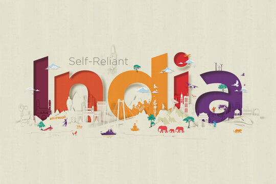
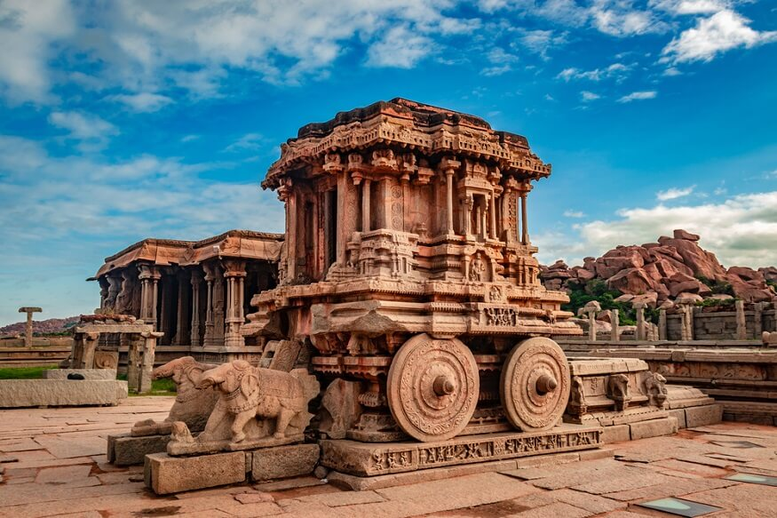
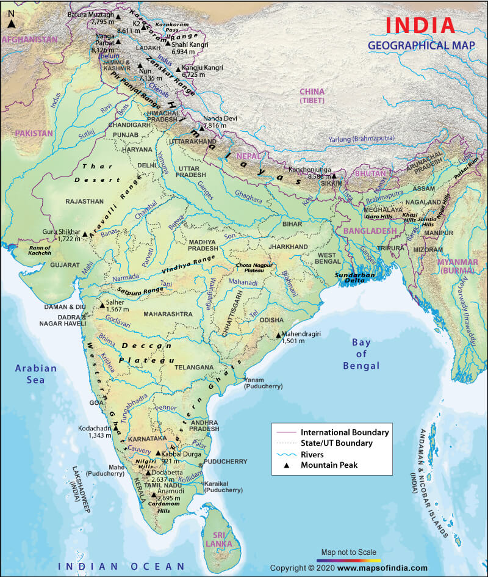

India, officially the Republic of India,is a country in South Asia. It is the seventh-largest country by
area; the most populous country since 2023, and, since its independence in 1947, the world's most populous
democracy.Bounded by the Indian Ocean on the south, the Arabian Sea on the southwest, and the Bay of
Bengal on the southeast, it shares land borders with Pakistan to the west;China, Nepal, and Bhutan to the north;
and Bangladesh and Myanmar to the east. In the Indian Ocean, India is near Sri Lanka and the Maldives; its
Andaman
and Nicobar Islands share a maritime border with Thailand, Myanmar, and Indonesia.
Settled life emerged on the subcontinent in the western margins of the Indus river basin 9,000 years ago,
evolving
gradually into the Indus Valley Civilisation of the third millennium BCE.By 1200 BCE, an archaic form of
Sanskrit, an Indo-European language, had diffused into India from the northwest. Its hymns recorded the
early dawnings of Hinduism in India. India's pre-existing Dravidian languages were supplanted in the northern
regions. By 400 BCE, caste had emerged within Hinduism, and Buddhism and Jainism had arisen, proclaiming
social orders unlinked to heredity. Early political consolidations gave rise to the loose-knit Maurya and Gupta
Empires. Widespread creativity suffused this era.
In South India, the Middle kingdoms exported Dravidian language scripts and religious cultures to the kingdoms
of Southeast Asia.

Etymology
According to the Oxford English Dictionary (2009), the name "India" is derived from the Classical Latin
India, a
reference to South Asia and an uncertain region to its east. In turn "India" derived successively from
Hellenistic
Greek India , Ancient Greek Indos, Old Persian Hindush (an eastern province of the Achaemenid
Empire), and ultimately its cognate, the Sanskrit Sindhu, or 'river'—specifically the Indus River, and by
extension
its well-settled southern basin. The Ancient Greeks referred to the Indians as Indoi, 'the people of the
Indus'.
Medieval India
The Indian early medieval age, from 600 to 1200 CE, is defined by regional kingdoms and cultural diversity.
When Harsha of Kannauj, who ruled much of the Indo-Gangetic Plain from 606 to 647 CE, attempted to expand
southwards, he was defeated by the Chalukya ruler of the Deccan. When his successor attempted to expand
eastwards, he was defeated by the Pala king of Bengal. When the Chalukyas attempted to expand southwards, they
were defeated by the Pallavas from farther south, who in turn were opposed by the Pandyas and the Cholas from
still
farther south. No ruler of this period was able to create an empire and consistently control lands much beyond
their core region. During this time, pastoral peoples, whose land had been cleared to make way for the growing
agricultural economy, were accommodated within caste society, as were new non-traditional ruling classes. The
caste system consequently began to show regional differences. 
Modern India
Vital to India's self-image as an independent nation was its constitution, completed in 1950, which put in
place a
secular and democratic republic. Economic liberalisation, which began in the 1980s and the collaboration with
Soviet Union for technical know-how, has created a large urban middle class, transformed India into one of the
world's fastest-growing economies, and increased its geopolitical clout. Yet, India is also shaped by seemingly
unyielding poverty, both rural and urban; by religious and caste-related violence; by Maoist-inspired
Naxalite insurgencies; and by separatism in Jammu and Kashmir and in Northeast India. It has unresolved
territorial disputes with China and with Pakistan. India's sustained democratic freedoms are unique among
the world's newer nations; however, in spite of its recent economic successes, freedom from want for its
disadvantaged population remains a goal yet to be achieved.
Geography
India accounts for the bulk of the Indian subcontinent, lying atop the Indian tectonic plate, a part of the
Indo-Australian Plate. India's defining geological processes began 75 million years ago when the Indian Plate,
then part of the southern supercontinent Gondwana, began a north-eastward drift caused by seafloor spreading to
its
south-west, and later, south and south-east. Simultaneously, the vast Tethyan oceanic crust, to its northeast,
began to subduct under the Eurasian Plate. These dual processes, driven by convection in the Earth's mantle,
both created the Indian Ocean and caused the Indian continental crust eventually to under-thrust Eurasia and to
uplift the Himalayas. Immediately south of the emerging Himalayas, plate movement created a vast
crescent-shaped trough that rapidly filled with river-borne sediment and now constitutes the Indo-Gangetic
Plain. The original Indian plate makes its first appearance above the sediment in the ancient Aravalli range,
which extends from the Delhi Ridge in a southwesterly direction. To the west lies the Thar Desert, the eastern
spread of which is checked by the Aravallis.

States of India
🔹Andhra Pradesh
🔹Manipur
🔹Arunachal Pradesh
🔹Meghalaya
🔹Assam
🔹Mizoram
🔹Bihar
🔹Nagaland
🔹Chhattisgarh
🔹Odisha
🔹Goa
🔹Punjab
🔹Gujarat
🔹Rajasthan
🔹Haryana
🔹Sikkim
🔹Himacal Pradesh
🔹Tamil Nadu
🔹Jharkhand
🔹Telangana
🔹Karnataka
🔹Tripura
🔹Kerala
🔹Uttar Pradesh
🔹Madhya Pradesh
🔹Uttarakhand
🔹Maharashtra
🔹West Bengal
Union territories
Andaman and Nicobar Islands
Chandigarh
Dadra and Nagar Haveli and Daman and Diu
Jammu and Kashmir
Ladakh
Lakshadweep
National Capital Territory of Delhi
Puducherry
What is special about India ?
India is unique due to its rich history, diverse culture, and vibrant traditions, as well as its status
as the
world's largest democracy and the birthplace of major religions like Hinduism, Buddhism, Jainism, and
Sikhism.
It also boasts a wide array of natural wonders, iconic monuments like the Taj Mahal, and a thriving film
industry.
Furthermore, India is known for its linguistic diversity, with over 1,600 languages spoken, and its
contributions to
fields like mathematics, astronomy, and the arts.